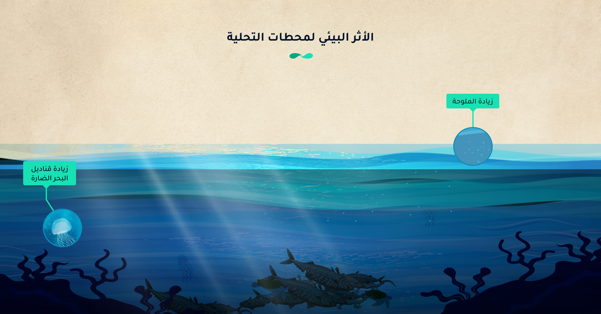

تحدٍ مُلحٌّ يواجه سكان المنطقة الصحراوية الشاسعة الواقعة بين بحرٍ وخليج، مناخ جاف وموارد مائية شحيحة، البحث عن حل
!ليس ترفًا؛ بل ضرورة!
كان الحلّ في مياه البحر المالحة عبر تحويلها لمياه صالحة للشرب، من خلال أنابيب مغمورة في
قاع البحر تتصل بوحداتٍ للتحلية، أدخلت تلك التكنولوجيا للمنطقة -بحسب تقرير صادر عن الأمانة العامة لدول مجلس
التعاون الخليجي في العام 2014- شركة هولندية، عرفها أهل مدينة جِدّة باسم "كينداسا"، وهي تحريف لسان أهل المدينة
للكلمة الإنجليزية Condenser.
135
متراً مكعبـــــاً
من المياه المُحلاة يوميًا
أنتجت تلك الأنابيب المغمورة في قاع البحر حوالي 135 مترًا مكعبًا من المياه المُحلاة
يوميًا،
حتى استبدلها عبر شركة اسكتلندية، الملك المستقبلي لما سيعرف لاحقًا بالمملكة العربية السعودية،
عبد
العزيز آل سعود في العام 1928، أي بعد ثلاث سنوات فقط من سيطرته على الحجاز. كانت تلك هي اللبِنات
الأولى لتوطين تكنولوجيا تحلية المياه في الإمارات والممالك الخليجية الفقيرة مائيًا.
-خلال القرن العشرين- محاولات دول مجلس التعاون الخليجي تطوير الاعتماد المطّرد على تلك التكنولوجيا
الجديدة لتأمين احتياجاتها المائية، بما يتواءم مع الطفرة السكانية التي شهدتها البلاد نتيجة ارتفاع
معدلات المواليد، إضافة لزيادة أعداد الوافدين للعمل في البلاد بعد الطفرة الاقتصادية التي تلت
الاكتشافات البترولية في المنطقة.
في عقدي الخمسينيات والستينيات من القرن العشرين، واكبت الكويت تلك التكنولوجيا؛ فقامت ببناء أول محطة حديثة لتحلية
المياه باستخدام عملية التقطير الوميضي متعدد المراحل (MSF)، وتبعتها دول المجلس ببناء محطات مماثلة، كالبحرين
وعُمان في العام 1975، ثم دولة الإمارات العربية المتحدة في العام 1977.
توالت التقنيات الجديدة لتحلية المياه،
ووصل عدد محطات التحلية في بلدان دول مجلس التعاون في أكتوبر/تشرين الأول 2023، إلى 815 محطة تحلية تعتمد على مياه
الخليج العربي، من أصل 1668 محطة تحلية تتغذى على مياه البحر، وتتواجد في دول المجلس، وفقًا لقاعدة بيانات حصلنا
عليها من Global water intelligence (وهي شركة متخصصة في تقديم بيانات متعلقة بقطاع المياه العالمي).
محطات التحلية المعتمدة
على مياه البحر في الدول الخليجية الست
سعة خيالية
67 مليون متر مكعب يوميًا، هي سعة محطات التحلية في دول المجلس، وتمثّل 45% من السعة الإجمالية لمحطات التحلية
المعتمدة على مياه البحر في 187 دولة حول العالم، بينما يبلغ إجمالي سعة محطات التحلية الخليجية التي تتغذى على مياه
الخليج العربي وبحر العرب 31% من السعة العالمية.
الخليج العربي/الفارسي، الذي تتشارك فيه دول مجلس التعاون الخليجي والعراق من جهة، وإيران من الجهة الأخرى، هو بحر
شبه مغلق يرتبط ببحر العرب عبر مضيق هرمز وممر مائي ضيِّق، هو الرابط الوحيد بين الخليج والمياه المفتوحة لبحر العرب
والمحيط الهندي، أتاح هذا الارتباط الجغرافي تبادل المياه والحياة البحرية والموارد الأخرى بين الخليج وبحر العرب.
سعة محطات التحلية الخليجية المعتمدة على مياه البحر مقارنة بالعالم
المصدر: قاعدة بيانات GWI
محطات التحلية التي جاءت لتحلّ مشكلة شحّ المياه وعطش البشر، خلّفت أثرًا بيئيًا فادحًا على الحياة البحرية في
الخليج،
زادت ملوحته بفعل تصريف تلك المحطات للمياه المرتجعة، أو كما يُسمّى المحلول الملحي الناجم عن عملية التحلية في
مياهه،
كما ساهمت تلك المحطات في رفع درجة حرارة الخليج.
"من الواضح للجميع أن هناك كمية هائلة من المياه المُحلّاة في الخليج العربي، والتي تخلّف بشكل مؤكد أثرًا بيئيًا،
حاليًا ومستقبلًا" هذا ما يؤكِّده د. ويل لو كوين، عالم البيئة البحرية الرئيسي في مركز علوم البيئة ومصايد الأسماك
وتربية الأحياء المائية (CEFAS)، وهي الوكالة الاستشارية للعلوم البحرية التابعة لحكومة المملكة المتحدة، والذي قضى
سبع
سنوات في الخليج العربي لمراجعة الأثر البيئي لمحطات تحلية المياه في بحر العرب، وأنتج عدة أوراق علمية وبحثية بخصوص
المياه المُحلاة، في مقابلته مع "مواطن".
يوضّح "لو كوين" مدى جسامة الأمر عبر مقارنة كمية المياه المحلاة المنتجة يوميًا في العام 2018 بسعة أحواض السباحة
الأوليمبية؛ فسينتج أن كميّة المياه المحلاة في يوم واحد، كافية لملء 8200 حوض سباحة أوليمبي. ويضيف: "إذا صُفّت تلك
الأحواض في خط واحد سيكون لدينا حوض سباحة بطول 410 كيلومترات، وهي نصف المسافة بين الكويت وأبوظبي".
يضيف "لو كوين" بعدًا جديدًا لمثاله السابق بقوله: "إن كمية المياه التي تمر عبر محطات التحلية ثلاثة أضعاف ما يتم
استخراجه منها؛ فهي تسحب المياه العذبة للخارج، بينما تعيد المحلول الملحى لمياه البحر، بالتالي فإن كمية المياه
التي تمرّ عبر محطات التحلية في اليوم الواحد من أيام العام 2018 كانت تكفي لمد خط أحواض السباحة بين الكويت وأبوظبي
والعودة لمنتصف المسافة بينهما".
بعد خمس سنوات من تحليل "لو كوين"، وحتى أكتوبر 2023، وفقًا لقاعدة بيانات GWI (تشمل المحطات العاملة والمتوقفة
والمستقبلية)، تضاعفت -تقريبًا- السعة الإجمالية لمحطات التحلية الواقعة في دول مجلس التعاون الخليجي، التي تسحب مياهها
من الخليج العربي وبحر العرب، لتصل لحوالي 46 مليون متر مكعب يوميًا، ويمثل هذا سعة حوالي 14,832 حوض سباحة أوليمبي.
السعة
46,350,823
متر مكعب / يومياً
سعة حمام السباحة الواحد
31,250
متر مكعب
عدد حمامات السباحة التي تملؤها محطات التحلية
46,350,823
حمام سباحة
المسافة التي تملؤها المحطات التحلية
741.5
كيلومترًا في اليوم
نصف هذه الكمية من المياه تذهب لأغراض الشرب، وفقًا لقاعدة بيانات GWI، وأكثر من ثلثها (37%) يذهب لأغراض الصناعة،
والنسبة المتبقية تتوزع على أغراض الري والسياحة.
تسيطر البلديات كمياه للشرب على
أكثر من نصف المحطات في الخليج
المياه المرتجعة
تختلف طريقة عمل محطات التحلية وفقًا للتكنولوجيا المستخدمة؛ فهناك محطات تستخدم الحرارة العالية وأخرى تستخدم
الأغشية، ولكن محطات التحلية تعمل بشكل أساسي عن طريق إزالة الملح والشوائب من مياه البحر لإنتاج المياه العذبة
الصالحة للشرب، وتمرّ بخمس مراحل أساسية، أهمها: ضخ مياه البحر إلى محطة التحلية، ثم تصفيتها لإزالة الجزيئات الأكبر
حجمًا، وبعد ذلك يتم دفع مياه البحر المفلترة عبر أغشية شبه منفذة تحت ضغط عالٍ؛ حيث تحتوي هذه الأغشية على مسامّ
صغيرة تسمح لجزيئات الماء بالمرور مع الاحتفاظ بالملح، يتم بعد ذلك تطهير المياه المعالجة وتصفيتها مرة أخرى لتلبية
معايير مياه الشرب، وفي المرحلة الأخيرة، يتم ضخ المياه المالحة المتبقية والمعروفة باسم المياه المرتجعة المالحة أو
المحلول الملحي مرة أخرى إلى البحر، وهو السبب الرئيس للأزمة البيئية لمحطات التحلية، لأنها تتسبب في رفع درجة ملوحة
المحيط.
6 مراحل
لدورة عمل محطات التحلية
بحسب د. محمد داوود، استشاري موارد المياه بهيئة البيئة بأبوظبي بالإمارات العربية المتحدة؛ فإن تركيز المحلول
الملحي في المياه المرتجعة يتراوح بين 50-75 مليجرام لكل لتر، وله كثافة أعلى بكثير من مياه البحر، لذا ينزل في قاع
البحر بالقرب من مخرج التصريف، خالقًا طبقة مالحة جدًا من المياه، والتي يكون لها آثار سلبية على البيئة والحياة
البحرية في هذه المناطق؛ وخصوصًا إذا كانت سرعة دوران المياه البحرية منخفضة، والتيارات البحرية بطيئة، أو عمق
المياه سطحيًا.
ويضيف "داوود" خلال حديثه لـ"مواطن"، أن درجة حرارة المياه المرتجعة من محطات التحلية تكون مرتفعة، وعادة ما يسمح
بتصريفها عند ارتفاع درجة حرارتها بخمس درجات أعلى من درجة حرارة المياه البحرية، وهو ما يرفع من درجة حرارة المياه
الساحلية، ويُقلّل من مستوى الأكسجين الذي يُمكن أن يتسبّب في ما يعرف بـ "مناطق ميتة" بيولوجيًا، باعتبار أن المادة
المرتجعة فائقة الملوحة وأكثر سُمِّية بفعل المواد الكيميائية المُستخدمة في عملية تحلية المياه.
لا تتوافر بيانات تفصيلية عن حجم المحلول الملحي الذي تنتجه محطات التحلية، وتختلف الدراسات العلمية أيضًا في تقدير
حجم المحلول الملحي الذي يتم تصريفه في الخليج العربي. ووفقًا لورقة منشورة في 2020 في مجلة "اتصالات البحوث
البيئية"؛ فإن أكبر 24 محطة لتحلية المياه في الخليج العربي في العام 2017، والتي تستخرج حوالي 11 مليون متر مكعب من
المياه العذبة يوميًا، تضخ حوالي 275 ألف متر مكعب من الملح في الخليج يوميًا. ومن شأن هذا أن يؤدي إلى زيادة
الملوحة على مستوى الحوض بحوالي 0.2 رطل لكل بوصة مربعة على مدار فترة 5 سنوات.
ولكن ورقة أخرى منشورة في أبريل 2018 تؤكد أنه في دول مجلس التعاون الخليجي، مقابل كل متر مكعب واحد من المياه
العذبة المنتجة، ينتُج مترين مكعبين من المحلول الملحي الذي يتم تصريفه في الخليج العربي.
ويشير "داوود" إلى أن حجم المياه المرتجعة يعتمد أيضًا على الطاقة الإنتاجية للمحطة ونوع التكنولوجيا المستخدمة
فيها.
وتتنوع التكنولوجيا المستخدمة في محطات التحلية في الخليج العربي، ولكن النسبة الكبرى -بشكل أساسي- كانت للتناضح العكسي
بنسبة 60%، ومن ثم محطات الفلاش متعدد الوسائط بنسبة 22%، وبعد ذلك التقطير متعدد التأثير بنسبة 17% وفقًا لقاعدة بيانات
GWI.
التناضح العكسي (RO)
الفلاش متعدد المراحل (MSF)
التقطير متعدد التأثيرات (MED)
60٪ من المحطات في الخليج العربي
تعمل بالتناضح العكسي
العملية: يتم دفع مياه البحر عبر غشاء شبه نافذ تحت ضغط مرتفع، مما يسمح فقط لجزيئات الماء بالمرور مع رفض
الأملاح والشوائب. هذه الطريقة هي الأكثر استخدامًا نظرًا لكفاءتها وانخفاض استهلاك الطاقة مقارنة بالطرق
الحرارية.
تدفق المياه: يدخل الماء من خلال نظام السحب، ويخضع للمعالجة المسبقة لإزالة الجزيئات الأكبر حجمًا، ثم يتم دفعه
عبر أغشية التناضح العكسي. الناتج هو المياه العذبة، بينما يتم تصريف المحلول الملحي المركز.
العملية: تستخدم فروق الضغط الأسموزي لسحب المياه من خلال غشاء شبه نافذ باستخدام محلول سحب مركّز.
تدفق المياه: يتم اتباع خطوات مماثلة للسحب والمعالجة المسبقة، مع إنتاج المياه العذبة على جانب واحد من الغشاء.
العملية: يتم تسخين مياه البحر ثم إزالة الضغط منها بسرعة لإنتاج البخار، الذي يتم تكثيفه إلى مياه عذبة. هذه
الطريقة كثيفة الاستهلاك للطاقة ولكنها فعالة للعمليات واسعة النطاق.
تدفق المياه: تدخل مياه البحر، ويتم تسخينها، ويتم جمع البخار كمياه عذبة؛ ويبقى المحلول الملحي بعد التكثيف.
العملية: يتم استخدام مراحل متعددة من التبخير والتكثيف، حيث يقوم البخار من مرحلة واحدة بتسخين المرحلة
التالية، مما يحسن كفاءة الطاقة.
تدفق المياه: مشابه لعملية تحلية المياه بالطرق التقليدية ولكن بكفاءة أعلى في استخدام الحرارة.
العملية: يتم ضغط البخار الناتج عن غليان مياه البحر، باستخدام الحرارة المنبعثة أثناء الضغط لتبخير المزيد من
مياه البحر.
تدفق المياه: يتكثف بخار المياه العذبة مرة أخرى إلى شكل سائل بينما يتم طرد المحلول الملحي.
العملية: يدفع المجال الكهربائي الأيونات عبر أغشية التبادل الأيوني الانتقائي، ويفصل المياه العذبة عن المياه
المالحة. هذه الطريقة أكثر فعالية للمياه المالحة من مياه البحر.
تدفق المياه: تخرج المياه العذبة من جانب واحد من الغشاء بينما يتراكم المحلول الملحي على الجانب الآخر.
كما يعتمد حجم المحلول الملحي أيضًا على معدل الاسترداد؛ حيث تؤدي معدلات الاسترداد الأعلى إلى إنتاج كمية أقل من
المحلول الملحي. على سبيل المثال؛ تتمتع محطات الفلاش متعددة المراحل MSF عادةً بمعدلات استرداد تتراوح بين 35% إلى
45%،
في حين يمكن أن تتمتع محطات التناضح العكسي بمعدلات استرداد تصل إلى 90%.
يؤكد داوود أن كميات المياه المرتجعة من طرق التحلية بالتبخير تكون حوالي 7 أمتار مكعبة، شاملة مياه التبريد مقابل
إنتاج
متر مكعب واحد من المياه المحلاة، في حين تنخفض هذه الكمية إلى متر مكعب واحد مقابل إنتاج متر مكعب من المياه
المحلاة في
طرق الأغشية.
"ليست الملوحة التي يسببها المحلول الملحي هي الأزمة الوحيدة" في رأي داوود، لكن الأزمة الكبرى هي أن هذه المياه
المرتجعة تحتوى على مواد كيميائية تؤثر على الأحياء البحرية. ويوضح "داوود"، أن هذه المواد السامة، هي تلك الإضافات
الكيماوية بهدف التغلب على الترسيب على جدار الغلايات، أو الرغوة التي تحدث عند دخول المياه المالحة لمحطات التحلية.
ويتفق معه "لو كوين" قائلًا: "نحن لا نعرف تمامًا المواد الكيميائية الموجودة في محطات تحلية المياه. ربما تستخدم كل
محطة أنواعًا مختلفة قليلًا". لكن "لو كوين" ورفاقه أثناء العمل على بحثهم، وجدوا بعض التقارير التي تشير لإضافة
مضادات
التقشير بما لا يزيد عن مللي جرامين لكل لتر.
ويضيف "لو كوين": "كانت هناك دراسات قد أظهرت أن مضاد التقشير يمكن أن يؤثر على الشعاب المرجانية، ويمكن أن يكون
سامًا.
ويفترض "لو كوين" أنه في حال تمت إضافة مضادات التكلس بمعدل لا يزيد عن ملليجرامين لكل لتر من المياه التي تمر عبر
محطات
التحلية، وقمت بضرب ذلك المعدل بكمية المياه المُحلاة؛ فمن المتوقع أنه تم إطلاق حوالي 13 مليون كيلوجرام من المواد
المضادة للتكلس في المياه الساحلية للخليج سنويًا، أو ما يعادل 500 شاحنة كبيرة من المواد المضادة للتكلس يتم
إلقاؤها في
المياه الساحلية لدول الخليج.
لم تستطع "مواطن" الوصول لأنواع مضادات التكلس المستخدمة، ولكن وفقًا لقاعدة بيانات GWI، هناك ثلاث شركات تقوم
بتوريد
معدات نظام التغذية الكيميائية لسبع عشرة محطة تقع في دول مجلس التعاون؛ منها: شركة Statiflo International Ltd وهي
شركة
خاصة محدودة مقرها المملكة المتحدة. وBASF Badische Anilin-und Sodafabrik، وهي شركة أوروبية متعددة الجنسيات وأكبر
منتج
للمواد الكيميائية في العالم بتوريد نظام التغذية الكيميائية.
تحتوى أيضًا المياه المرتجعة من محطات التحلية على معادن ثقيلة؛ مثل النحاس والحديد والألمنيوم والنيكل، وفي مقال
بحثي
منشور في سبرينجر نيتشر- قام الباحث بتحليل عينات على بعد -1500 متر من محطة تحلية "الخبر" -وهي واحدة من أقدم وأكبر
محطات تحلية المياه العاملة بالتناضح العكسي في شرق المملكة العربية السعودية- وجد أن قيمة المعادن الثقيلة في
الرواسب،
أعلى بمقدار 10-100 مرة من قيم منظمة الصحة العالمية، وخلص إلى أن هذه المستويات كانت مرتبطة بتصريفات النفايات
السائلة
من محطة تحلية المياه.
معدل الاسترداد في محطات تحلية المياه، هو مقياس أداء حاسم يشير إلى كفاءة عملية تنقية المياه، ويُعرَّف
بأنه النسبة المئوية لإجمالي حجم المياه التي يتم تحويلها إلى مياه عذبة صالحة للاستخدام من إجمالي حجم
المياه التي يتم إدخالها إلى النظام (مياه التغذية).
تزيد المواد المضادة للتكلس (مضادات التقشير) من قابلية ذوبان الأملاح قليلة الذوبان، وهي تستخدم بشكل أكثر
شيوعًا في محطات التناضح العكسي لجعل الماء أكثر نفاذية.
الشركات الموردة لنظام التغذية الكيمائية
لمحطات التحلية الخليجية
اسم المشروع
الفجيرة 2
الإمارات العربية المتحدة
ستاتيفلو الدولية المحدودة
Statiflo International Ltd.
اسم المشروع
الجليلة
الإمارات العربية المتحدة
ستاتيفلو الدولية المحدودة
Statiflo International Ltd.
اسم المشروع
الجبيل
المملكة العربية السعودية
باسف / ستاتيفلو الدولية المحدودة
BASF / Statiflo International Ltd.
اسم المشروع
رأس لفان ج
قطر
باسف
BASF
اسم المشروع
الدور IWPP
البحرين
ستاتيفلو الدولية المحدودة / ستاتيفلو الدولية المحدودة
Statiflo International Ltd. / Statiflo International Ltd.
اسم المشروع
رأس أبو فنطاس امتداد A1
قطر
ستاتيفلو الدولية المحدودة
Statiflo International Ltd.
اسم المشروع
معادن الفوسفات
المملكة العربية السعودية
باسف
BASF
اسم المشروع
نخلة جبل علي (بما في ذلك مدينة العرب)
الإمارات العربية المتحدة
ستاتيفلو الدولية المحدودة
Statiflo International Ltd.
اسم المشروع
الغبرة IWP
عمان
باسف / ستاتيفلو الدولية المحدودة
BASF / Statiflo International Ltd.
اسم المشروع
وسعة الفجيرة 1 SWRO
الإمارات العربية المتحدة
ستاتيفلو الدولية المحدودة
Statiflo International Ltd.
اسم المشروع
الحد 3
البحرين
باسف
BASF
اسم المشروع
ميناء صحار الصناعي
عمان
شركة اساهي كاسي
Asahi Kasei Corporation
اسم المشروع
الفجيرة 2 (متوسط)
الإمارات العربية المتحدة
ستاتيفلو الدولية المحدودة
Statiflo International Ltd.
اسم المشروع
الفجيرة 1 (MSF)
الإمارات العربية المتحدة
ستاتيفلو الدولية المحدودة
Statiflo International Ltd.
اسم المشروع
إعادة تطوير شرق الدوحة
الكويت
ستاتيفلو الدولية المحدودة
Statiflo International Ltd.
اسم المشروع
ميناء صحار الصناعي SWRO
عمان
شركة اساهي كاسي
Asahi Kasei Corporation
اسم المشروع
البركة 2
عمان
ستاتيفلو الدولية المحدودة
Statiflo International Ltd.
تحتوى أيضًا المياه المرتجعة من محطات التحلية على معادن ثقيلة؛ مثل النحاس والحديد والألمنيوم والنيكل، وفي مقال بحثي
منشور في سبرينجر نيتشر - قام الباحث بتحليل عينات على بعد -1500 متر من محطة تحلية "الخبر" -وهي واحدة من أقدم وأكبر
محطات تحلية المياه العاملة بالتناضح العكسي في شرق المملكة العربية السعودية- وجد أن قيمة المعادن الثقيلة في الرواسب،
أعلى بمقدار 10-100 مرة من قيم منظمة الصحة العالمية، وخلص إلى أن هذه المستويات كانت مرتبطة بتصريفات النفايات السائلة
من محطة تحلية المياه.
مناطق ميتة
بحسب "لو كوين"؛ فإن تفاعل المحلول الملحي مع درجات الحرارة والمواد الكيميائية، له تأثير قوي ومدمر على الحياة البحرية،
إضافة لآثاره السلبية على مصايد الأسماك وعلى التنوع البيولوجي، كما أن له انعكاسًا على السياحة؛ كونه يؤثر على بعض
الموائل الساحلية؛ ما قد يؤدي إلى زيادة تآكل السواحل.
ويضيف "لو كوين"، على الآثار السابقة، أن محطات التحلية تسحب مياه البحر عادة؛ ما قد يؤدي -دون قصد- إلى سحب بعض
الكائنات البحرية، كيرقات الأسماك والعوالق وأشكال الحياة البحرية الأخرى الصغيرة؛ ما قد يؤثر على التنوع البيولوجي
البحري المحلّي.
أما الباحث في قسم الهندسة المدنية والبيئية بمعهد ماساتشوستس للتكنولوجيا، حامد إبراهيم، الذي درس محطات التحلية في
الخليج العربي لمدة عشر سنوات فيؤكد لـ"مواطن"، أن تصريف المياه المالحة يؤدي إلى تكاثر الطحالب الضارة (HABs)، وينتج
عنه سموم قد تكون ضارة على الحياة البحرية والبشر. ويضيف: "هذه الطحالب تتسبب في نفوق الأسماك واستنزاف الأكسجين وإطلاق
السموم الضارة في الماء".
وفي الدراسة التي أجراها "إبراهيم"، والمنشورة عام 2020 في مجلة الهندسة البيئية، وجد أن المنطقة الواقعة في جنوب الخليج
بالقرب من مضيق هرمز قد شهدت بين عامي 1980 و 2015 تحولًا في نموّ الطحالب السامّة. كما أكّد في دراسته إلى أن التوسع
السريع في تحلية مياه الخليج منذ أواخر ثمانينيات القرن الماضي يرتبط بزيادة أعداد وسرعة نمو الطحالب السامة الملحوظة في
الخليج العربي وخليج عُمان.
ويشير "إبراهيم" إلى ضرر الطحالب السامة على محطات التحلية إذ تسدّ المرشحات، كما تُلحق الضرر بمعدات تلك المحطات؛ ما
يزيد من من تكاليف المعالجة المسبقة لمياه البحر، ويعوق إنتاج المياه العذبة. كما تشير دراسته إلى غلق العديد من محطات
تحلية مياه البحر في الخليج بفعل الطحالب السامّة في عامي 2008 و 2009.

يؤكد معظم الباحثين الذين تحدثت معهم "مواطن" أن الأزمة البيئية التي تسببها محطات التحلية ليست خاصة بدولة بعينها؛ بل
هي أزمة إقليمية يتشارك فيها دول مجلس التعاون الست بنسب مختلفة، كما تلقي بظلالها على الجميع بنسب متفاوتة أيضًا، كلٌ
حسب موقعها الجغرافي.
البروفيسور في جامعة السلطان قابوس بعُمان، أنطوان بورناما، يخبر "مواطن" بأنّ الأثر البيئي يتوقف على مدى عمق البحر
ودوران المياه في الخليج العربي.
يضيف "بورناما": من غير العادل ألّا يحظى أكبر الملوثين (السعودية والإمارات العربية المتحدة)، بنفس الأثر البيئي الواقع
على دول مثل البحرين وقطر والكويت، لأن الدول الأولى مياه الخليج فيها ليست ضحلة كالدول الثانية.
وفقًا لقاعدة بيانات GWI، تمتلك الإمارات العربية المتحدة أكبر سعة لمياه التحلية في منطقة الخليج العربي بنسبة 36%، من
إجمالي السعة الإجمالية لمحطات التحلية في دول مجلس التعاون الخليجي، يليها السعودية بنسبة 29%، ثم الكويت بنسبة 13%
وبعدها قطر بنسبة 10% وعمان بنسبة 8% وأخيرًا البحرين بنسبة 4%.
الإمارات ثم السعودية المالكين الأكبر لمحطات التحلية في الخليج
(متر مكعب في اليوم)
كما تشير دراسة "إبراهيم" إلى أن المنطقة الجنوبية الغربية في الخليج العربي هي الأكثر تضررًا من مستويات الملوحة
جرّاء المياه المرتجعة.
ولقياس درجات الملوحة، بنى الباحثون "نموذجًا" لمحاكاة التفاعل الديناميكي بين تصريف المياه المالحة وتدويرها في
الخليج، وهو عبارة عن نموذج مقترن عالي الدقة يتضمن مكونات جوية ومحيطية.
قام الباحثون بدراسة حالة الخليج العربي من ملوحة ودرجة حرارة أثناء الفترة بين 1981 و 1990، وهي الفترة التي لم يكن
فيها عدد كبير من محطات التحلية، استخدموا بعدها النموذج لمحاكاة ثلاثة سيناريوهات مختلفة؛ سيناريو لا يتم فيه
محاكاة تصريف المحلول الملحي، وآخر يتم فيه تصريف المياه المالحة من أكبر 24 محطة لتحلية مياه البحر في الخليج،
والأخير يتم فيه تصريف المياه المالحة من أكبر 14 محطة خارج منطقة جنوب غرب الخليج.
شغّلوا النموذج لمدة 10 سنوات، ثم حللوا النتائج لتحديد تأثير تصريف المياه المالحة على ملوحة الخليج على مستوى
الحوض وعلى المستوى الإقليمي، وكانت النتيجة أن تصريف المياه المالحة يرفع الملوحة بمقدار 1.6 جرام/كجم، مع حدوث
تراكم الملح في المنطقة الجنوبية الغربية للخليج بالقرب من الساحل العربي.
يُشبّه "إبراهيم" الخليج العربي بحمام السباحة الواقع في وسط صحراء شديدة الحرارة، لذلك فإن معدل التبخر عالٍ جدًا؛
حيث يبلغ متوسط معدل التبخر السنوي حوالي 1.8 م3/السنة؛ ما يسهم في زيادة الملوحة نتيجة التبخر المفرط للمياه
العذبة التي تدخل الخليج عن طريق شط العرب من العراق، تاركة وراءها الأملاح والمعادن.
اللاعبون الكبار
محطات تحلية المياه في الخليج العربي مملوكة ومدارة من قبل كيانات مختلفة، بما في ذلك الوكالات الحكومية والشركات الخاصة
والشراكات بين القطاعين العام والخاص.
ووفقًا لقاعدة بيانات GWI؛ فحوالي 81% من المحطات الواقعة في الخليج العربي تمت عن طريق نظام EPC، وهو نظام الهندسة
والمشتريات والبناء، ويكون المقاول الواحد مسؤولًا عن جميع أنشطة الهندسة والمشتريات والبناء. ويحتفظ القطاع العام
بملكية المنشأة وتشغيلها، وحوالي 4% من المحطات تمت عن طريق نظام BOO (نموذج البناء والتملك والتشغيل)؛ حيث يقوم القطاع
الخاص بتمويل المنشأة وبنائها وامتلاكها وتشغيلها لفترة زمنية محددة، ولا يحتفظ القطاع العام بأي حصة ملكية في المنشأة،
و 4% أخرى تمت عن طريق IWP، وهو نموذج "منتج المياه المستقل"؛ حيث تقوم جهة خاصة ببناء وتشغيل منشأة لمعالجة/تحلية
المياه، ويتم بعد ذلك بيعها إلى مرفق المياه العام بموجب اتفاقية شراء طويلة الأجل.
يسيطر نظام الهندسة والمشتريات والبناء
علي 81% من محطات التحلية
وفقًا لقاعدة بيانات GWI، هناك 518 مالكًا لمحطات التحلية في الخليج العربي من أصل 815 محطة، تملك هيئة مياه وكهرباء
أبوظبي (دائرة الطاقة حاليًا)، حوالي 38 محطة، ووزارة الكهرباء والماء بالكويت 29 محطة، والمؤسسة العامة لتحلية المياه
المالحة في السعودية 28 محطة، ووزارة الطاقة والمياه في عمان 24 محطة، وهيئة كهرباء ومياه الشارقة 22 محطة، وشركة الزيت
العربية السعودية (أرامكو السعودية) 21 محطة، والهيئة الاتحادية للكهرباء والماء (فيوا) حوالي 20 محطة، وهيئة كهرباء
ومياه دبي 19 محطة، ولا تذكر قاعدة البيانات شيئا عن ملكية 300 محطة تقريبا.
كما تشير قاعدة البيانات إلى وجود 36 محطة تحلية تحت الإنشاء من ضمن الإجمالي البالغ 815 محطة، و 29 محطة متوقفة و 26
محطة مُغلقة إضافة لـ 144 محطة يُفترض أنها توقفت عن العمل GWI ودون أن تؤكد ذلك.
الشركات المالكة لمحطات التحلية في الخليج العربي
هناك أيضًا 64 من محطات التحلية تملكها شركات نفطية وطنية أو خاصة، وشركة بترول أبوظبي الوطنية (أدنوك) تملك 7 محطات،
كما أن شركة الزيت العربية القابضة تملك أيضا 6 محطات تحلية في الخليج العربي، وشركة الكويت للنفط 5 محطات.
وتعمل غالبية محطات تحلية المياه في دول مجلس التعاون الخليجي بالنفط -وفقًا لتقارير سابقة- تستخدم المملكة العربية
السعودية ما يقرب من 300 ألف برميل من النفط يوميًا لتحلية المياه.
وحول إمكانية استخدام مصدر متجدد للطاقة اللازمة لتشغيل محطات التحلية، يقول د. جواد الخراز، المدير التنفيذي للمركز
الإقليمي للطاقة المتجددة وكفاءة الطاقة (RCREEE، والمدير السابق للأبحاث في مركز الشرق الأوسط لأبحاث تحلية المياه في
عُمان، لـ"مواطن": "إن هناك سعيًا للتحول إلى استخدام الطاقة الشمسية في تحلية المياه، لكن العائق هو ضخامة بعض المحطات،
والتي يصعب تشغيلها بالطاقة الشمسية لاحتياجها لمساحة كبيرة جدًا لتوليد الكهرباء بالطاقة الشمسية اللازمة لتشغيلها".
هل نتوقف؟
لا يبدو -وفقًا للخبراء الذين تحدثنا معهم- أن حكومات دول مجلس التعاون تنوي التوقف عن إنشاء محطات جديدة لتحلية
مياه البحر؛ بل تسعى دول المجلس لأن يصل إجمالي قدرة تحلية المياه لديها إلى 80 مليون متر مكعب يوميّا بحلول العام
2050.
يعلّق "لو كوين" قائلا: "بينما تُبنى محطات جديدة تُسهم في تلوث البيئة؛ فهناك "تغيّر مناخي" حادث ومستمرّ، وتتزايد
درجات الحرارة بشكل جنوني، لذا؛ فمن المتوقّع أن نشهد تأثيرات مضاعفة على الشعاب المرجانية، وتجمعات الأسماك والحياة
البحرية في العموم".
كما تتوقع دراسة منشورة في مجلة "نشرة التلوث البحري" ارتفاع درجات الملوحة والحرارة في الخليج العربي بشكل كبير
بحلول عام 2050، وأن ترتفع درجات الحرارة في ثلاثة أرباع الموائل الخليجية ذات العمق الأقل من عشرين مترًا، بأكثر من
درجتين مئويتين ( 3.6 درجة فهرنهايت).
"تأثير محطات التحلية صامت، لكن إن أمهلته عشر سنوات أخرى فسينفجر"؛ هكذا يعلّق المؤسس والمدير العام لشركة
HALTIQA، وهي شركة تساعد في صناعة المياه المحلاة بشكل مستدام- ليونيل رابين، والذي جاء من قرية ساحلية في فرنسا،
ويضيف لـ"مواطن": "ستختفي الأسماك من مناطق صغيرة، لأن درجات الملوحة العالية تدفع بعض الأسماك لهجرة مناطقها،
وسيهاجر معها الصيادون لاكتشاف أنفسهم في وظائف أخرى بحثًا عن قوت يومهم هم وعائلاتهم".